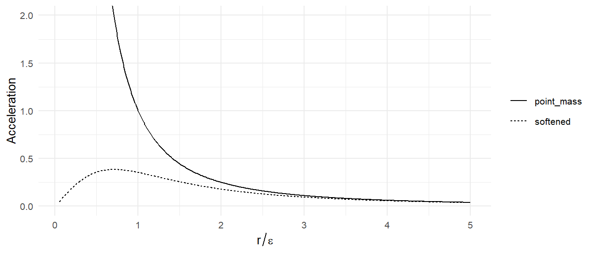
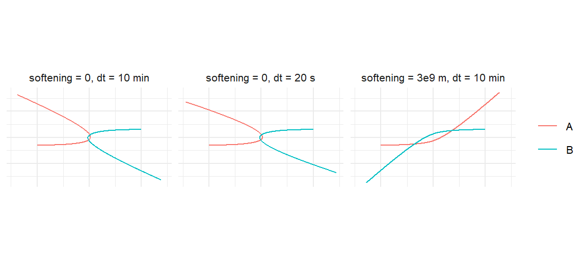

M <- 1e30
mu <- gravitational_constant * 2 * M
u <- 1.2e5 # initial relative speed, m/s
b <- 3e9 # initial sideways offset, m
encounter <- function(softening = 0, time_step = 600,
duration = 4 * seconds_per_day) {
create_system() |>
add_body("A", mass = M, x = -1e10, y = -b / 2, vx = u / 2) |>
add_body("B", mass = M, x = 1e10, y = b / 2, vx = -u / 2) |>
simulate_system(time_step = time_step, duration = duration,
softening = softening)
}6 Softening: What Happens When Bodies Get Close
The inverse-square force has a hole in it. As two point masses approach, \(1/r^2\) grows without limit, and at \(r = 0\) it is infinite. Nothing in the real universe does this, because nothing in the real universe is a point: two stars that get close enough touch, and from then on gravity is the least of their problems. But the simulation does not know that. simulate_system() has an argument, softening, whose entire purpose is to paper over the hole. This chapter explains what the argument does to the force law, where the formula comes from, what it costs you when bodies are far apart, and when you should use it. The short version: softening is a model of bodies having size, not a fix for a time step that is too large, and it is off by default for a reason.
6.1 The singularity, numerically
An integrator with a fixed step assumes the acceleration does not change much during a step. Near a close encounter that assumption fails completely. The characteristic time of the encounter is roughly the periapsis distance divided by the periapsis speed, and for a deep encounter that can be minutes while the step is an hour. The integrator then takes one enormous kick in a direction computed from a position that is already wrong, and the result is two bodies flying apart with far more energy than they came in with. Nothing blows up to NaN; it just produces garbage that looks like physics.
Here is a deliberately bad encounter: two Sun-mass stars approaching each other on a path that would bring them within about two-thirds of a solar radius, which for real stars is a collision.
Before running anything, Chapter 4 tells us what should happen. From the initial relative state we can get the eccentricity, and from the eccentricity the periapsis distance and the angle through which the stars should be deflected. For a hyperbola, each asymptote makes an angle \(\arccos(-1/e)\) with the periapsis direction, so the total deflection is \(\delta = 2\arcsin(1/e)\):
start <- encounter(duration = 600) # one step: just the initial state
e0 <- get_orbital_elements(start, "B", "A", mu = mu)$e[1] # mu = G(M_A + M_B)
r_p <- (b * u)^2 / mu / (1 + e0) # p / (1 + e), with h = b u
c(e = e0, periapsis_solar_radii = r_p / 6.957e8,
deflection_deg = 2 * asin(1 / e0) * 180 / pi)
#> e periapsis_solar_radii deflection_deg
#> 1.0043512 0.6962632 169.3294587The stars should swing around each other through about 169 degrees, nearly reversing direction, and leave with exactly the eccentricity and energy they arrived with. Now run it with a ten-minute step and no softening:
bad <- encounter(softening = 0, time_step = 600)
c(e_start = get_orbital_elements(bad, "B", "A", mu = mu)$e[1],
e_end = get_orbital_elements(bad, "B", "A", mu = mu)$e[nrow(bad) / 2],
max_energy_error = max(abs(conserved_quantities(bad)$energy_error)))
#> e_start e_end max_energy_error
#> 1.004351 1.005115 21.463194The eccentricity, which should be a constant of the motion, is not even close, and the energy error is enormous. The time step was far too large for the periapsis passage, and the integrator did what integrators do with too large a step: it invented energy. The paths look like a slingshot because that is what a huge spurious kick looks like.
6.2 Plummer softening
The package’s remedy replaces the distance in the force law:
\[ r \;\longrightarrow\; r_{\mathrm{soft}} = \sqrt{r^2 + \varepsilon^2}, \]
so the acceleration of body \(j\) due to body \(k\) becomes
\[ \mathbf{a}_{jk} = G m_k \,\frac{\mathbf{r}_k - \mathbf{r}_j}{\left(r_{jk}^2 + \varepsilon^2\right)^{3/2}}. \tag{6.1}\]
The difference vector in the numerator is untouched; only the \(r^3\) in the denominator is softened. At \(r = 0\) the acceleration is now zero, not infinite, and its maximum magnitude, which occurs at \(r = \varepsilon/\sqrt2\), is about \(0.38\,G m_k/\varepsilon^2\).
Figure 6.1 shows what the softened force looks like. Inside \(\varepsilon\) it falls to zero; outside a few \(\varepsilon\) it is indistinguishable from the point-mass force.
tibble(x = seq(0.05, 5, by = 0.01)) |>
mutate(point_mass = 1 / x^2,
softened = x / (1 + x^2)^1.5) |>
tidyr::pivot_longer(-x, names_to = "law", values_to = "a") |>
ggplot(aes(x, a, linetype = law)) +
geom_line() +
coord_cartesian(ylim = c(0, 2)) +
labs(x = expression(r / epsilon), y = "Acceleration", linetype = NULL)
6.3 What softening costs
The softened force is weaker than the true force at every distance, not just inside \(\varepsilon\). The ratio is
\[ \frac{a_{\mathrm{soft}}}{a} = \left(1 + \frac{\varepsilon^2}{r^2}\right)^{-3/2} \approx 1 - \frac{3}{2}\frac{\varepsilon^2}{r^2} \qquad (r \gg \varepsilon). \tag{6.2}\]
For a circular orbit the period goes as the inverse square root of the force, so softening lengthens every period by a fraction of about \(\tfrac34\,\varepsilon^2/r^2\). Put numbers in. The documentation suggests softening = 1e4 (10 km) as reasonable for planetary systems; at Earth’s distance from the Sun, \(\varepsilon/r \approx 7\times10^{-8}\) and the period changes by one part in \(10^{14}\). You could not detect that with a million years of simulation. At \(\varepsilon = 10^9\) m the change at 1 AU is \(3\times10^{-5}\), about a quarter of an hour per year, which starts to matter for precise work. At \(\varepsilon = 10^{10}\) m, a bit under a tenth of an AU, Earth’s year would be about three days too long.
The lesson is that softening is cheap as long as \(\varepsilon\) is much smaller than every orbital separation you care about, and it is never free. With softening = 0, the default, there is no error of this kind at all, and for planetary systems, where nothing ever gets close to anything, the default is the right choice.
6.4 The encounter, softened
Run the same encounter with the same ten-minute step and a softening length of \(3\times10^9\) m, about four solar radii, which is a crude way of saying “these stars have size”:
soft <- encounter(softening = 3e9, time_step = 600)
c(e_start = get_orbital_elements(soft, "B", "A", mu = mu)$e[1],
e_end = get_orbital_elements(soft, "B", "A", mu = mu)$e[nrow(soft) / 2],
max_energy_error = max(abs(conserved_quantities(soft)$energy_error)))
#> e_start e_end max_energy_error
#> 1.0043512 1.0047221 0.0140379Two things changed. First, the energy is now conserved to a fraction of a percent, because the softened force varies slowly enough during the encounter for a ten-minute step to follow it. Second, the eccentricity after the encounter is different from the eccentricity before, and that is correct: the stars did not interact through a point-mass force, so they are not on the point-mass hyperbola. Softening changed the physics, which is what it is for. The energy diagnostic needs the same softening, so that it computes the potential energy of the force that was actually used. conserved_quantities() reads the softening length from the simulation output and replaces \(r\) with \(\sqrt{r^2+\varepsilon^2}\) in the potential automatically; if you compute the energy yourself, you have to do the same.
The third run is the honest one: no softening, and a step small enough for the point-mass physics.
fine <- encounter(softening = 0, time_step = 20)
c(e_start = get_orbital_elements(fine, "B", "A", mu = mu)$e[1],
e_end = get_orbital_elements(fine, "B", "A", mu = mu)$e[nrow(fine) / 2],
max_energy_error = max(abs(conserved_quantities(fine)$energy_error)))
#> e_start e_end max_energy_error
#> 1.0043512 1.0043512 0.0270577Now the eccentricity survives the encounter and the energy error is small. That cost thirty times as many steps as the softened run, and it is the only one of the three that answers the question “what would two point masses do?”
bind_rows(bad |> mutate(run = "softening = 0, dt = 10 min"),
soft |> mutate(run = "softening = 3e9 m, dt = 10 min"),
fine |> mutate(run = "softening = 0, dt = 20 s")) |>
ggplot(aes(x, y, color = id)) +
geom_path() +
coord_equal() +
facet_wrap(~ run) +
labs(x = NULL, y = NULL, color = NULL) +
theme(axis.text = element_blank())
6.5 When to use it
Use softening when bodies have size and you care about what happens when they meet. Stars in a cluster, a planetesimal disk, anything with many bodies and frequent close passages. Set \(\varepsilon\) to something like the physical size of the bodies, or to a fraction of the typical spacing, and accept that encounters closer than \(\varepsilon\) are not being modeled correctly, because they would not be point-mass encounters in reality either. In this regime a modest softening also lets you use a larger time step than the closest passage would otherwise demand, which for a thousand-body system is the difference between a run that finishes and one that does not.
Do not use softening to rescue a bad time step in a few-body system. If two planets, or a comet and the Sun, pass close and the energy jumps, the cure is a smaller step (Chapter 13 shows how to afford one), not a softened force that changes the answer. The only exception is when you have decided that the close approach is a collision and you do not care about the trajectory afterward; then softening is a cheap way to keep the simulation from flinging things to infinity.
Keep \(\varepsilon\) far below the smallest orbit. Equation 6.2 is the rule: the relative error in the force is about \(\tfrac32(\varepsilon/r)^2\), so a softening of one percent of the smallest orbital radius changes periods by about one part in ten thousand. Decide what precision you need and work backward.
Account for it in diagnostics. The softened system conserves the softened energy. get_energy() and conserved_quantities() take the softening length from the run; if you hand-compute energies, use the softened distance, or you will diagnose a drift that is not there.
Exercises
Exercise 6.1 Simulate the Earth-Sun system for one year with softening equal to \(10^8\), \(10^9\), and \(10^{10}\) m and measure the period each time with measure_period(). Compare the fractional change with the prediction \(\tfrac34(\varepsilon/r)^2\).
Exercise 6.2 Differentiate the softened acceleration \(a(r) = Gm\,r/(r^2+\varepsilon^2)^{3/2}\) with respect to \(r\) and show that its maximum is at \(r = \varepsilon/\sqrt2\) with value \((2/3)^{3/2}\,Gm/(\sqrt{2}\,\varepsilon^2) \approx 0.385\,Gm/\varepsilon^2\).
Exercise 6.3 For the unsoftened encounter, run with steps of 320, 160, 80, 40, and 20 seconds and tabulate the eccentricity after the encounter and the maximum energy error. At what step does the answer stop changing?
Exercise 6.4 Show that the potential energy of two bodies interacting through the softened force is \(-Gm_1m_2/\sqrt{r^2+\varepsilon^2}\) by integrating the force from \(r\) to infinity. Then confirm that conserved_quantities(soft) reports a nearly constant energy while conserved_quantities(soft, softening = 0) does not.